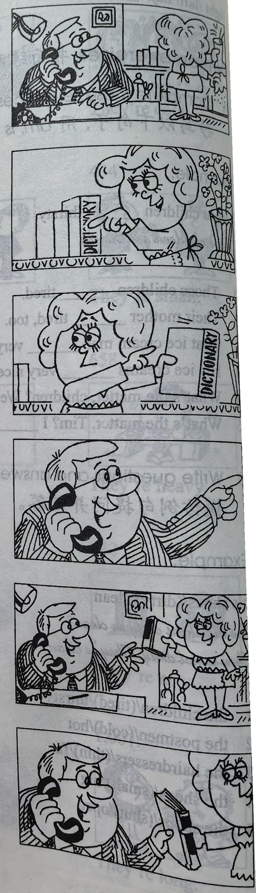

Lesson content · 课文
Lesson 21: Which book? · 哪一本书？
Listen then answer this question. 听录音，然后回答问题。
Which book does the man want?
这位男士要哪本书？
MAN: Give me a book please, Jane.
WOMAN: Which book?
WOMAN: This one?
MAN: No, not that one. The red one.
WOMAN: This one?
MAN: Yes, please.
WOMAN: Here you are.
MAN: Thank you.

New words and expressions · 生词和短语
| Word · 单词 | Pronunciation · 音标 | Meaning · 词义 |
|---|---|---|
| give | /ɡɪv/ | v. 给 |
| one | /wʌn/ | pron. 一个 |
| which | /wɪtʃ/ | question word 哪一个 |
Notes on the text · 课文注释
- Give me a book, please. 这是祈使句，省略了主语 you。
- Which book? 哪一本？这是一种省略形式。
- This one? 句中的 one 是不定代词，表示 book。复数形式是 ones。
Chinese translation · 参考译文
男人：请拿本书给我，简。
女人：哪一本？
女人：是这本吗？
男人：不，不是那本。是那本红皮的。
女人：这本吗？
男人：是的，请给我。
女人：给你。
男人：谢谢。
Practice · 课文练习
Understand the lesson · 课文理解
Comprehension · 理解题
Answer the question about the lesson text. 根据课文回答问题。
-
comprehension: Comprehension · 理解题 — Which book does the man want?
Practice worksheet · 配套练习
A. Dialogue
Read this dialogue. Fill in the missing words. 填空。
-
worksheet: A. Dialogue — Paul: Give ____ a knife ____, Susan.
Susan: ____ one? This ____?
Paul: Is it sharp?
Susan: No, it isn’t ____. It’s ____.
Paul: No, not that one. The ____ one.
Susan: Here ____ ____.
Paul: ____ you.
B. Vocabulary — opposites
Match each adjective to an opposite: old, blunt, little, empty. 搭配左右框中的词，并写出一张购物清单。
Example · 例句
large — little
-
worksheet: B. Vocabulary — opposites — new
-
worksheet: B. Vocabulary — opposites — full
-
worksheet: B. Vocabulary — opposites — sharp
B. Vocabulary — dialogues
Write short dialogues. 模仿例句完成以下练习。
Example · 例句
Give me the bottle, please. — Which one? The large one or the little one?
-
worksheet: B. Vocabulary — dialogues — glass / full? empty?
-
worksheet: B. Vocabulary — dialogues — box / new? old?
-
worksheet: B. Vocabulary — dialogues — knife / blunt? sharp?
C. Numbers
Write these numbers in figures. 用阿拉伯数字表示以下数词。
-
worksheet: C. Numbers — three hundred and thirty-three
-
worksheet: C. Numbers — seven hundred and eighty-one
-
worksheet: C. Numbers — a thousand and thirteen
-
worksheet: C. Numbers — five hundred and sixty-five
-
worksheet: C. Numbers — nine hundred and forty-two
-
worksheet: C. Numbers — a thousand and seven
Grammar practice · 语法练习
I. Add a, an, or the where necessary
- Here is ___ cup and ___ glass. ___ cup is small and ___ glass is big.
- Give me ___ book, please. Which one? ___ red one, please.
- Look! There's ___ policeman. Yes, and there's ___ engineer. ___ policeman is young, but ___ engineer is old.
- Mr. Jones isn't ___ student. He's ___ teacher. He's ___ very good teacher!
- Sophie is ___ French and she is ___ air hostess.
- This is Robert. He is ___ new student.
- What ___ make is your car? It's ___ Mini.
- Give me ___ umbrella, please. ___ umbrella? Which one? That one.
- Who is ___ man in ___ park? ___ man in ___ park is ___ ice cream man.
- Give me ___ cup, please, John. Here you are. Not ___ dirty one! ___ clean one, please!
II. Fill in the blanks with the correct form of the words given
- Give ___
(I)an ice cream, please. - This is ___
(I)new assistant. Come and meet ___(she). - What's ___
(you)job? ___(I)am an engineer. - Look at that man. ___
(he)is very tall. - Are these the boys' books? No, they aren't. ___
(they)books are new. - Give ___
(they)tea. ___(they)are thirsty. - Are ___
(you)office assistants? No, ___(we)aren't. ___(we)are sales reps. - Look at ___
(you)hands! Look at ___(they)! They're very dirty. - What's the matter, Tom? ___
(I)am tired. - ___
(we)are hot. Please give ___(we)an ice cream.
Your notes and answers
Use this space for longer responses or exercises that do not have an individual answer box.